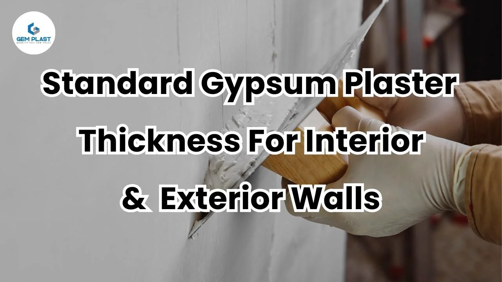
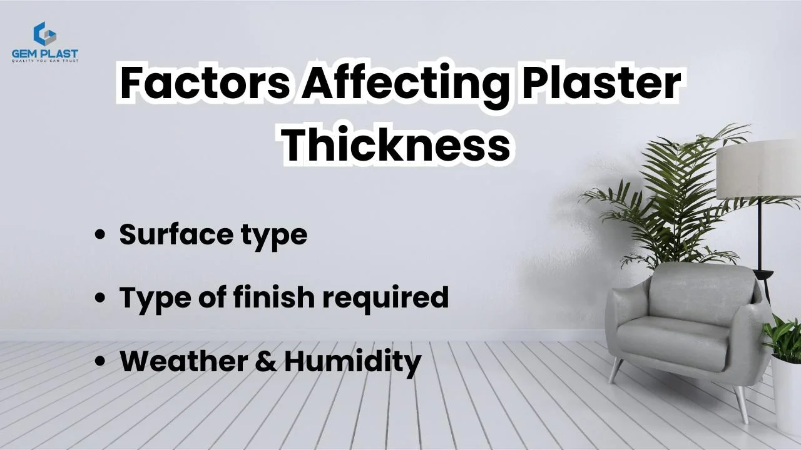
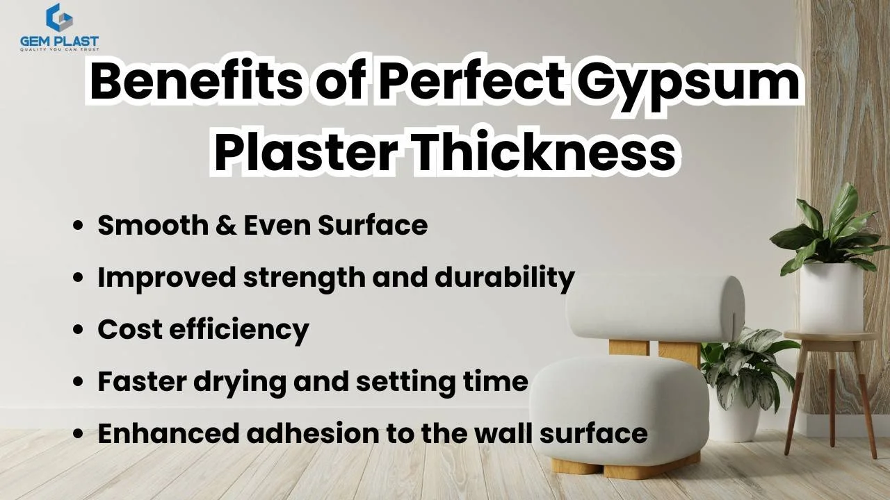

Gypsum plastering is the modern method of plastering. It has quickly become a preferred alternative to traditional cement plaster because it is faster, cleaner, and more efficient. One key aspect of achieving the best finish is understanding the gypsum plaster thickness that should be applied to interior and exterior walls. Usually, the standard thickness of gypsum plastering for interior walls is 10 mm to 12 mm, and the thickness for exterior walls is 10 mm – 20 mm. The cost of gypsum plaster is very low compared to cement plaster.
The quality of plastering depends on the perfect thickness of the plaster. It is prepared by mixing gypsum powder with water to form a paste, and this paste is applied to the walls. This plaster spreads evenly and is levelled using tools like screeds for the correct thickness. It sets within 20 to 30 minutes and does not require water curing. The durability and finishing of the walls depend on the thickness of the gypsum plastering. Gypsum plastering has become popular due to its smooth finish, fast application, and cost-effectiveness in construction..
Gypsum Plaster Thickness For Interior Walls
Gypsum plastering is more suitable for interior walls. Getting the right gypsum plaster thickness for interior walls is essential for a smooth finish and long-lasting durability. Based on our experience with modern construction and renovation projects, the correct thickness depends on the surface type, the wall condition, and the final finish desired. One of the most common gypsum plaster uses is to create smooth and even surfaces on interior walls.
The standard thickness of gypsum plaster for interior walls is 10 mm to 12 mm. If the wall’s surface is uneven, it may go up to 15 mm to avoid cracking. Most of the time, gypsum plaster is applied in a single coat, which saves time and effort. Brick walls commonly need around 12 mm of plaster, while RCC (Reinforced Cement Concrete) surfaces require a thinner layer of about 8–10 mm, along with a bonding agent to help the plaster stick. Using the right thickness ensures a strong, crack-free, and smooth surface that’s ready for painting.
The surface you’re plastering plays a key role. For brick walls, the usual thickness is 12 mm to cover joints and irregularities. For RCC (Reinforced Cement Concrete) surfaces, a thinner coat of around 8 to 10 mm is used. However, RCC surfaces are smoother and less porous, so a bonding agent must be applied before plastering to help the material stick properly.
Application method
In gypsum plastering work, the plaster is applied normally in one coat; a second coat can be done when the surface has more dents. After applying the plaster, it will cure within 20 – 30 minutes, depending on the humidity and thickness. No water curing is required, and it’s very cost effective.
Gypsum Plaster Thickness For Exterior Walls
Gypsum plastering can also be used for exterior walls. The thickness of the exterior walls is different from the interior walls. Normally, the gypsum plaster thickness for exterior walls is 10 to 20 mm, including two coats. The thickness of the base coat ranges from 10 to 15 mm, and the finishing coat 2 – 5 mm, depending on the nature of the walls. Applying two coats will increase the strength and durability of the wall.
Surface type is an important factor for applying gypsum plaster in exterior walls. Exterior walls are more exposed to weather conditions, so the chance of cracking and leakage is very high. So the wall should be cleaned properly and sealed before plastering. Using a bonding agent before plastering on the surface is recommended for improved adhesion.
Application method
Applying gypsum plaster to exterior walls requires extra care because these surfaces face weather conditions like rain, heat, and moisture. After applying the plaster, it’s recommended to seal the exterior walls with waterproof paint or coating to protect the gypsum from moisture. Proper application methods ensure a durable finish and help maintain the strength and appearance of the plaster over time.
Factors That Affect Plaster Thickness

When planning any gypsum plastering work, it’s important to know that the gypsum plaster thickness can vary depending on a few key factors. Choosing the right thickness helps achieve a strong, smooth, and long-lasting wall surface. Let’s look at what can affect the thickness of gypsum plaster during application.
1. Surface type
The type of surface being plastered plays a major role. For example, brick walls usually need around 12 mm of plaster because of their rough surface. Block walls may require slightly more or less, depending on their finish. RCC (Reinforced Cement Concrete) surfaces, on the other hand, are smoother and need thinner coats around 8 to 10 mm, but a bonding agent must be used to help the plaster stick properly.
2. Type of finish required
If a very smooth and perfect finish is needed, a bit more plaster may be applied to fill in any gaps or uneven areas. One of the main gypsum plaster uses is to give walls a clean and even look, so the thickness will depend on how flawless the surface needs to be.
3. Weather and Humidity
Weather also affects gypsum plastering work. In areas with high humidity or during the rainy season, plaster can take longer to dry. This may impact how thick each coat should be and how quickly it can be applied.
By understanding these factors, you can make better decisions about the ideal gypsum plaster thickness for each project and get the best results.
Benefits of Perfect Gypsum Plaster Thickness

Leave a Comment